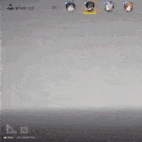
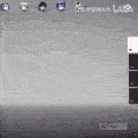

한국 와서 쇼핑하다 상처받은 일본 누나
댓글
퉤
퉤퉷
일본 자막 폰트랑 색깔이 20년전 그대로네


신이 죽은지 좀 됐지 ㅠㅠ
아니지 신은 가끔 나타나....너말고 다른사람한테 가끔...
저 남자가 신임
키크고 잘생기고 사교성고 좋고 센스도있으면 나는 뭐하고살아...
나랑 살자
개드립하고 살아
이곳이 분리수거장입니까


이거 개웃기네 ㅋㅋ
잘생겼는데 입도 잘터네 개부럽다
퉤
퉤퉷
일본 자막 폰트랑 색깔이 20년전 그대로네


신이 죽은지 좀 됐지 ㅠㅠ
아니지 신은 가끔 나타나....너말고 다른사람한테 가끔...
저 남자가 신임
키크고 잘생기고 사교성고 좋고 센스도있으면 나는 뭐하고살아...
나랑 살자
개드립하고 살아
이곳이 분리수거장입니까
이거 개웃기네 ㅋㅋ
잘생겼는데 입도 잘터네 개부럽다
잘생기고 키크고 말빨도 좋고
카악